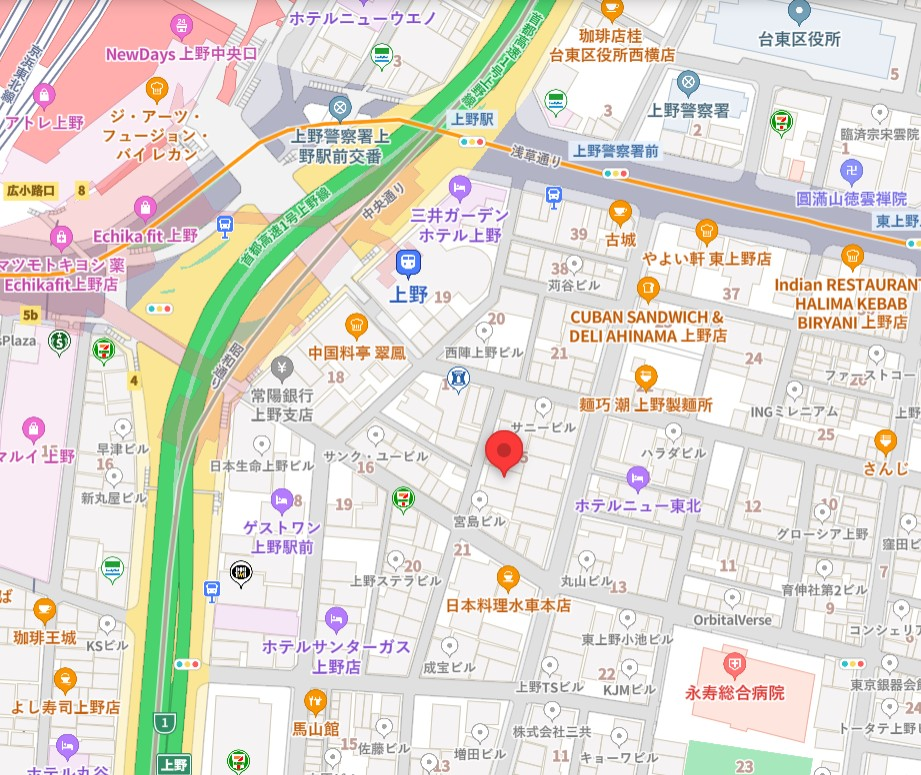

一般内科診療
風邪や発熱、喉の痛み、頭痛、腹痛などの症状を中心に、一般的な体調不良の診療を行っています。また、原因不明の不調や軽い症状であっても、早期診断に努めております。
JR上野駅より徒歩5分
当院専用 無料駐車場 10台分

| 診療時間 | 月曜日 | 火曜日 | 水曜日 | 木曜日 | 金曜日 | 土曜日 | 日曜日 |
|---|---|---|---|---|---|---|---|
| 9:00〜12:00 | ○ | ○ | ○ | ／ | ○ | ○ | ／ |
| 13:00〜18:00 | ○ | ○ | ○ | ／ | ○ | ／ | ／ |
●＝診療 ／＝休診
・受付時間：午前 8:00〜11:00 ／ 午後 12:00〜17:00
・休診日：木曜・土曜午後・日曜
・※祝祭日も診療を行っておりますが、休診日もございますので、事前にご確認ください。


こんにちは。佐藤医院の院長、佐藤太郎と申します。当院のホームページをご覧いただき、ありがとうございます。
佐藤医院では、「地域に根ざした医療」をモットーに、患者様一人ひとりに寄り添った医療を提供することを目指しております。日常的な健康管理から生活習慣病の予防、さらには専門的な診断や治療まで、幅広い内科診療を行い、地域の皆様の健康を支える役割を担っていきたいと考えております。
私たちは、患者様の不安を少しでも軽減し、安心して診療を受けていただけるよう、わかりやすい説明と丁寧な対応を心掛けております。また、近隣の医療機関とも連携し、必要に応じて高度医療へのアクセスもサポートいたします。どんな小さな不調でも、どうぞお気軽にご相談ください。
これからも、患者様の健康を第一に考え、地域の皆様に信頼される医療機関であり続けるため、スタッフ一同努力してまいります。どうぞよろしくお願いいたします。
佐藤医院 院長 佐藤 太郎
風邪や発熱、喉の痛み、頭痛、腹痛などの症状を中心に、一般的な体調不良の診療を行っています。また、原因不明の不調や軽い症状であっても、早期診断に努めております。

高血圧症、糖尿病、脂質異常症（高コレステロール血症）、メタボリック症候群など、生活習慣病の診断と治療を行います。病気の進行を予防し、健康維持のための生活指導や薬物療法を行います。
胃痛、胃もたれ、胸やけ、便秘、下痢などの消化器系の不調に対応しています。必要に応じて胃カメラや超音波検査などを実施し、胃腸の健康をサポートします。
咳、息切れ、胸の痛みなど、呼吸器系の症状について診療を行っています。季節性の喘息やアレルギー性鼻炎、慢性閉塞性肺疾患（COPD）などにも対応し、適切な治療と予防をサポートします。

佐藤医院は、地域の皆様の健康を守り、より良い生活をサポートすることを使命としています。創立以来、私たちは「患者様一人ひとりに寄り添った診療」を大切にし、地域密着型の医療を提供してまいりました。今後も、皆様の健康維持と病気予防に貢献するため、より良い医療サービスを提供し続けることをお約束いたします。
より詳しく地域の皆様に安心してご来院いただけるよう、スタッフ一同、誠心誠意対応いたします。それぞれの専門性と温かさを活かし、皆様の健康を支えるパートナーとしてお力になれるよう努めてまいります。



〒123-4567 東京都台東区上野0-0-0
ご来院の際は、交通状況にご注意ください。
最寄駅から徒歩5分の便利な立地です。
Q. 診療は予約制ですか？
A. 一般診療は予約なしでも受け付けていますが、予約優先制となっております。予防接種や健康診断などは完全予約制です。お電話またはWeb予約をご利用ください。
Q. 初診時に必要なものは何ですか？
A. 健康保険証、お薬手帳（お持ちの方）、診療情報提供書（紹介状）があればご持参ください。また、問診票を事前にご記入いただけると受付がスムーズです。
Q. 診察にはどれくらい時間がかかりますか？
A. 症状や混雑状況によりますが、目安として30分〜1時間程度です。事前に混雑状況をお問い合わせいただくことをお勧めします。
| 診療時間 | 月曜日 | 火曜日 | 水曜日 | 木曜日 | 金曜日 | 土曜日 | 日曜日 |
|---|---|---|---|---|---|---|---|
| 9:00〜12:00 | ○ | ○ | ○ | ／ | ○ | ○ | ／ |
| 13:00〜18:00 | ○ | ○ | ○ | ／ | ○ | ／ | ／ |
●＝診療 ／＝休診
・受付時間：午前 8:00〜11:00 ／ 午後 12:00〜17:00
・休診日：木曜・土曜午後・日曜
・※祝祭日も診療を行っておりますが、休診日もございますので、事前にご確認ください。